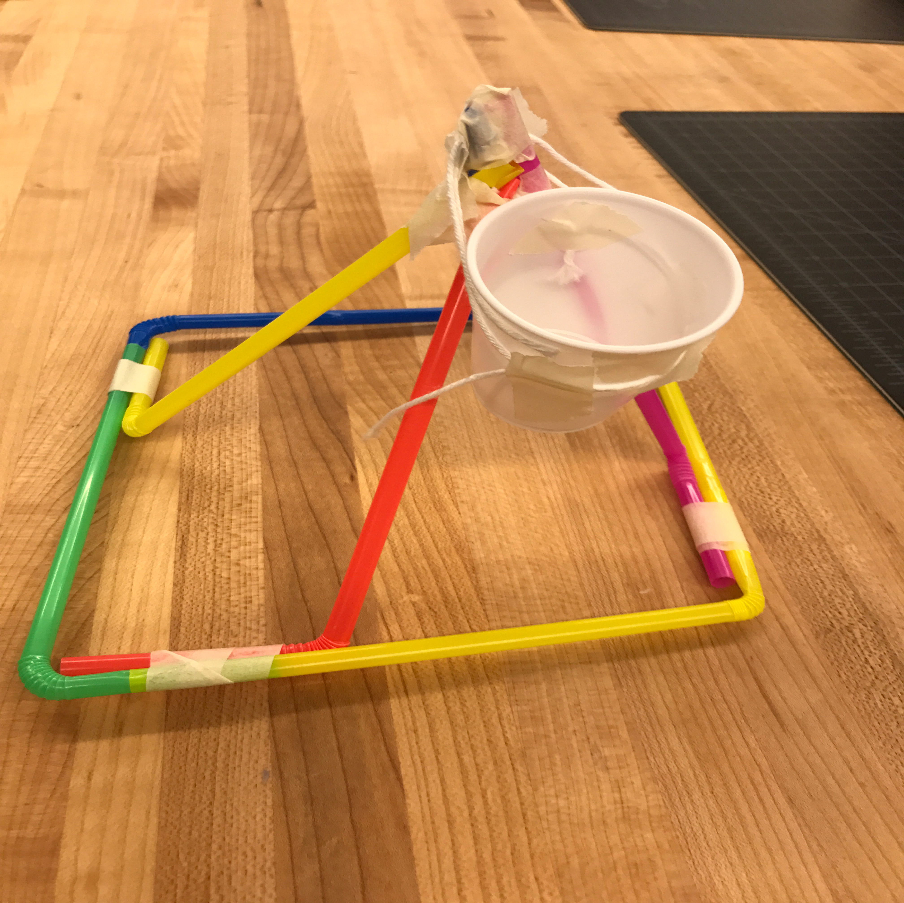

Week 9
This week we focused on using the Raspberry Pi computer. Raspberry Pi is an extremely small computer that only consists of a small circuit board and a few ports for USB inputs, HDMI, and a micro-USB for power. We used the software programs, Scratch and Python to code LED patterns on extra hardware devices. I learned that a computer can be shrunk down to such a small device physically. My favorite project was programming an LED grid to display a red, blue, and green question mark. I liked this because it helped me to understand how monitors worked, because it's pretty much the same concept, but on a bigger scale.

Back to index